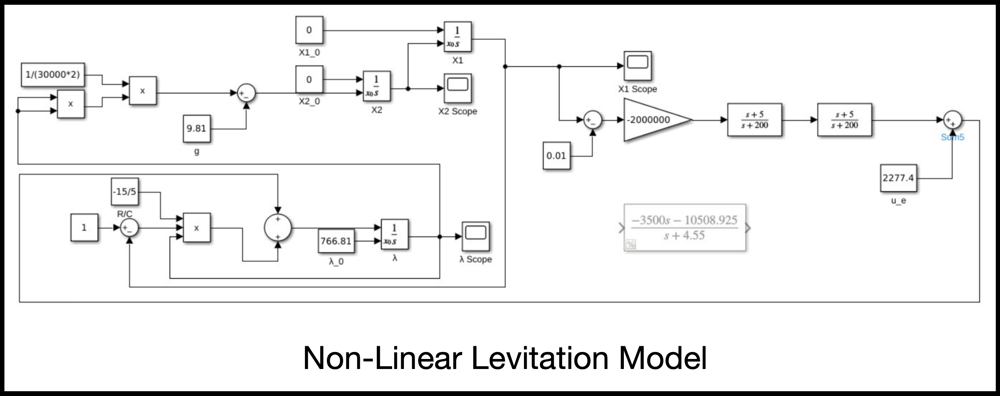
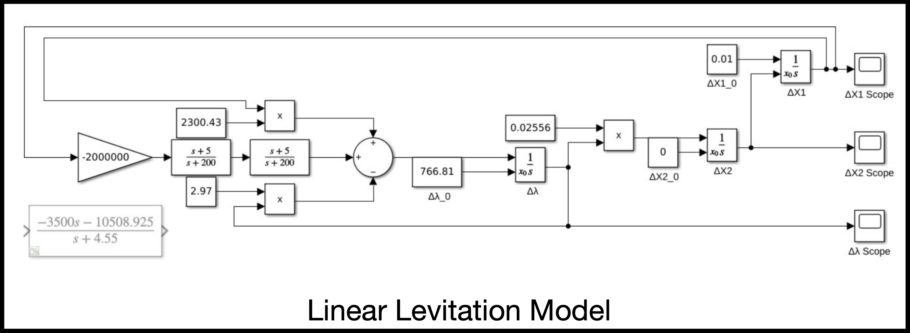
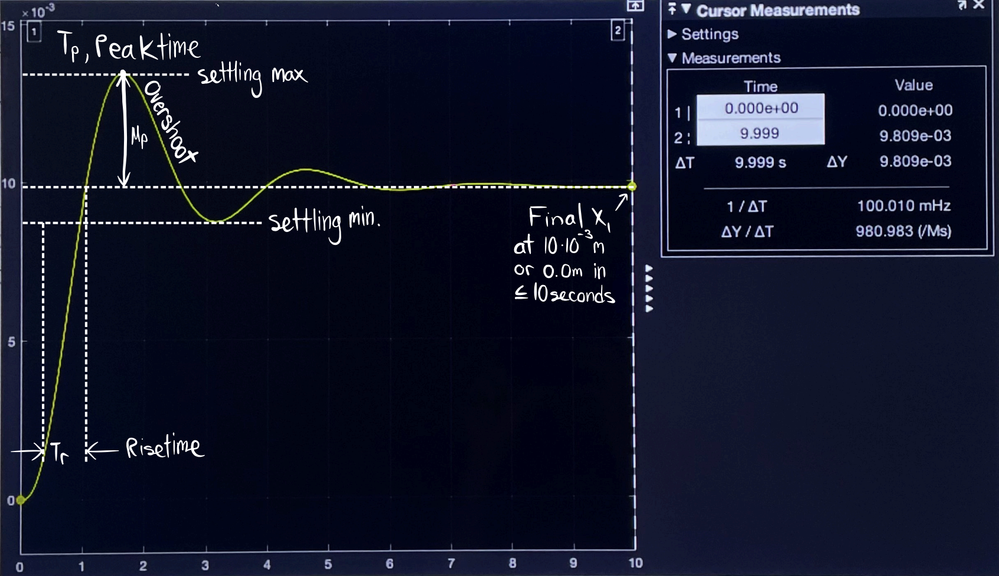
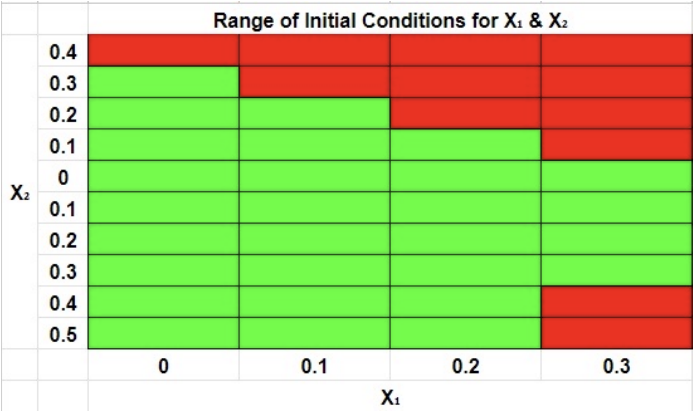

A control systems project using MATLAB Simulink to model, linearize, and stabilize a magnetic levitation system designed to lift a train from 0m to 0.01m within 10 seconds while minimizing overshoot and settling time.
This project was completed for my EE 141 Control Systems class. The objective was to design a controller for the vertical levitation of a simplified maglev train model. The system abstracts the train as an iron ball suspended in a magnetic field generated by an electromagnet.
The design goal was to raise the train from an initial height of 0m to a desired height of 0.01m in no more than 10 seconds, while keeping the system stable with limited overshoot and undershoot.
The project started from a nonlinear magnetic levitation model with three state variables: height, velocity, and magnetic flux linkage. The system equations related the ball height, velocity, electromagnet flux, gravity, resistance, coil geometry, and applied voltage input.
x1_dot = x2
x2_dot = (1 / 2m) * lambda^2 - g
lambda_dot = -(R / c) * (1 - x1) * lambda + uThe given parameters were:
m = 30000
g = 9.8
R = 15
c = 5
desired height = 0.01 mI built both nonlinear and linear levitation models in Simulink. The nonlinear model represented the original system equations directly, while the linear model was used for controller design and transfer-function-based analysis.


After deriving the equilibrium point and linearized transfer function, I designed a controller to stabilize the levitation height response. The controller was tuned to lift the train to the target height while reducing oscillation, limiting overshoot, and meeting the 10-second settling requirement.
Design goal:
x1: 0m → 0.01m
Performance target:
settle near 0.01m in ≤ 10 seconds
Controller objective:
stabilize the levitation dynamics
reduce overshoot and undershoot
improve settling behaviorThe final simulated response showed the train rising toward the desired 0.01m height. The response included an initial overshoot, followed by damping and convergence near the final target height before the 10-second requirement.

In the project submission, the response analysis labeled rise time, peak time, overshoot, settling bounds, and final height to verify whether the controller met the required performance target.
I also tested the nonlinear model across different initial conditions for height and velocity. The goal was to determine which starting conditions still allowed the controller to meet the levitation requirements.

The successful operating region was identified by running repeated simulations and marking which initial conditions satisfied the controller requirements.
This project helped connect control theory with a physical engineering system. I learned how equilibrium analysis, linearization, transfer functions, controller design, and simulation all fit together when stabilizing a nonlinear dynamic system.
It also showed me that controller performance depends heavily on operating point, desired height, and initial conditions. As the desired height increased, the system generally required more time and energy to stabilize, resulting in greater overshoot and longer settling behavior.
This was one of the more mathematically intensive projects in my electrical engineering coursework. It strengthened my understanding of feedback control, stability, simulation-based design, and performance tradeoffs in dynamic systems.